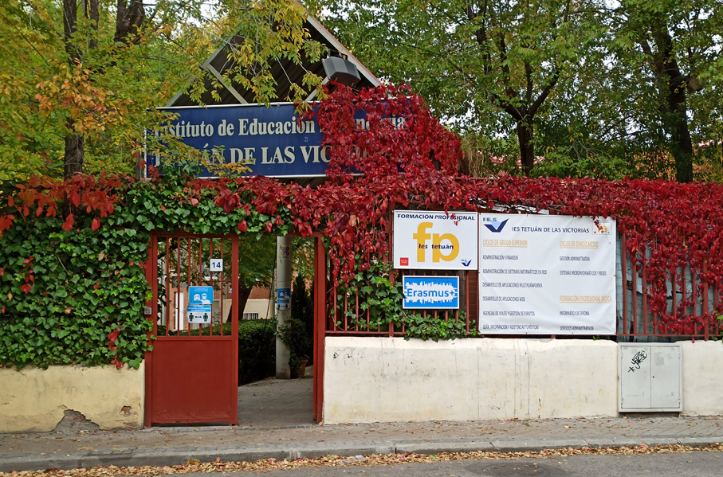
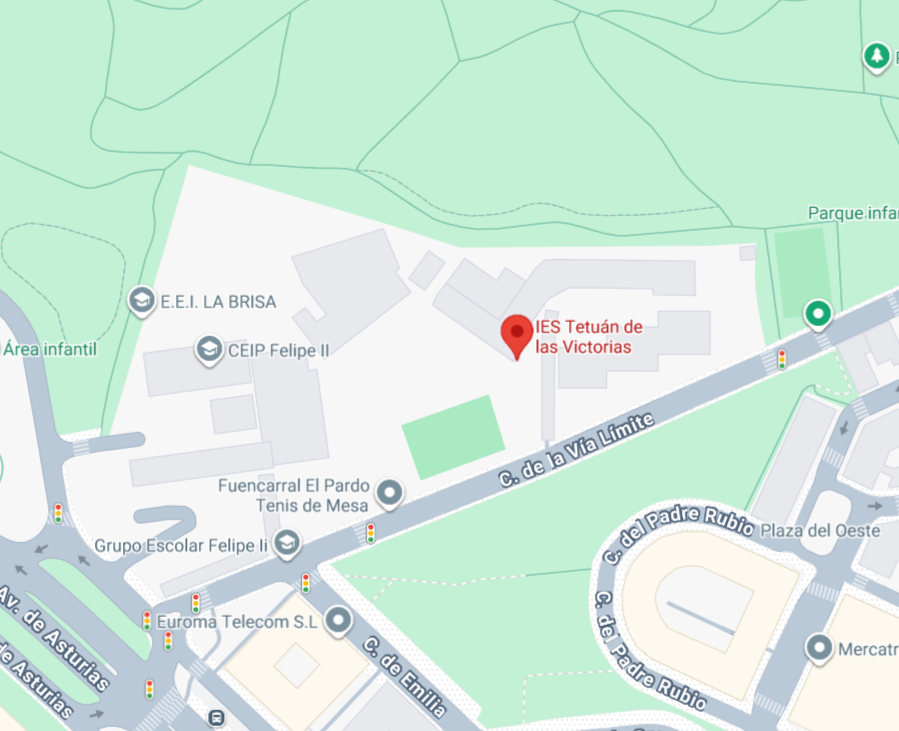
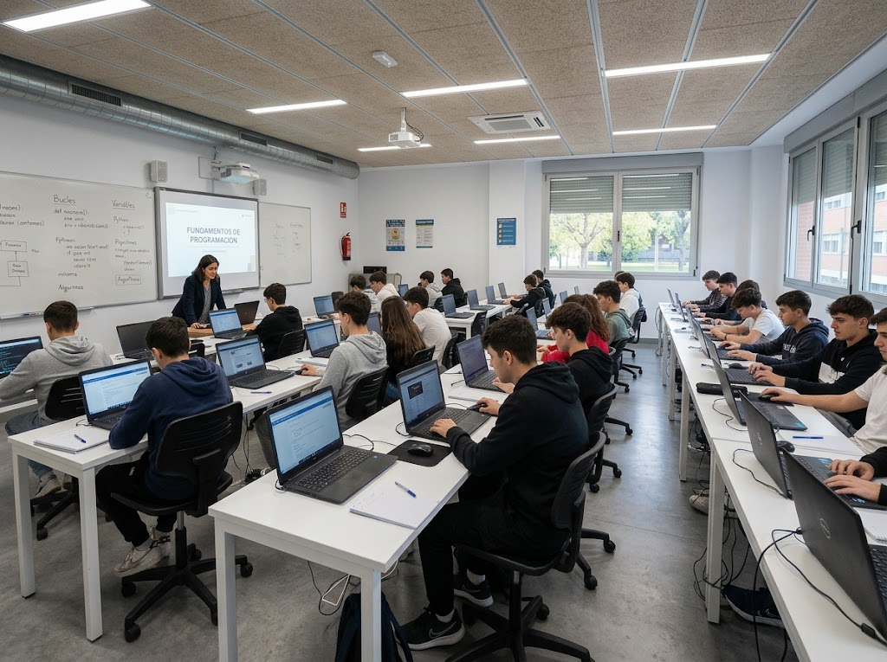
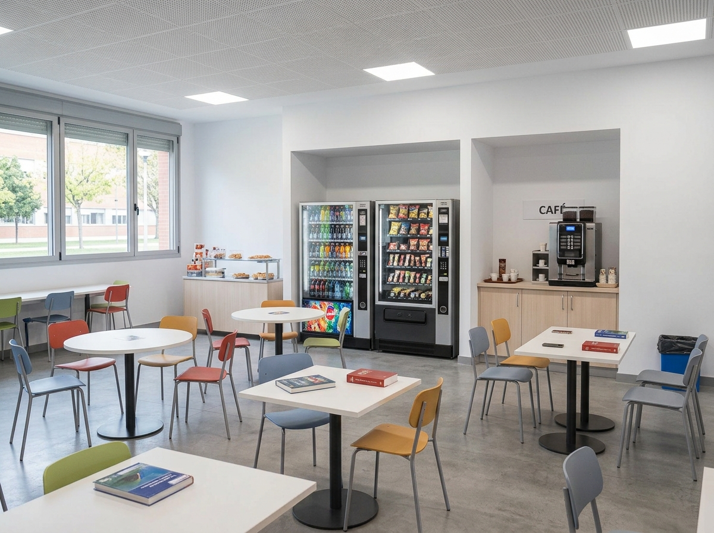

IES TETUAN DE LAS VICTORIAS

El IES Tetuán de las Victorias es un centro público de educación secundaria y formación profesional situado en la Calle de la Vía Límite, 14, en el distrito de Tetuán (Madrid).
Es un referente formativo volcado en la enseñanza práctica de calidad, especializado en familias profesionales clave como Informática y Comunicaciones, Comercio y Marketing, Hostelería y Turismo, y Administración y Gestión, ofreciendo un entorno de aprendizaje dinámico orientando al éxito laboral de sus estudiantes.

Aulas

El centro dispone de espacios académicos modernos y equipados tecnológicamente para dar respuesta a las exigencias de cada especialidad:
- Aulas de Informática: Dotadas con ordenadores de sobremesa de altas prestaciones, equipos portátiles y pizarras digitales interactivas que garantizan un aprendizaje práctico y actualizado.
- Aulas Polivalentes y Multiuso: Destaca el aula Ada Byron, un espacio equipado para la impartición de másteres, ponencias, charlas técnicas y evaluaciones.
- Salón de Actos: Espacio polivalente destinado a eventos institucionales, jornadas formativas y presentaciones.
- Aulas Especializadas: Espacios acondicionados con recursos técnicos y didácticos específicos para los ciclos de Turismo, Administración y Finanzas, así como para los Grados Medios.
Infraestructura

El complejo educativo cuenta con amplios espacios diseñados para favorecer la convivencia y el estudio:
- Dos Edificios Formativos: Un recinto compuesto por dos inmuebles independientes destinados a albergar de forma optimizada los distintos módulos de Grado Medio y Grado Superior.
- Zonas Verdes y Ajardinadas: Áreas al aire libre diseñadas para el descanso y la desconexión durante las pausas de clase.
- Cafetería: Espacio de restauración propio dedicado al ocio, punto de encuentro y descanso para alumnos y personal.
- Parking Privado: Zona de estacionamiento interior exclusiva para el profesorado y el alumnado del centro.